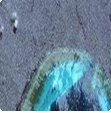
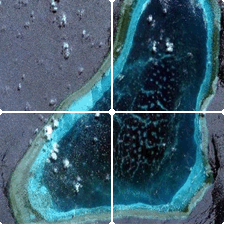

關於黃岩島
該島位於北緯15°07′，東經117°51′，距海南約500海里，距西沙群島約340海里，中沙環礁約160海里。海盆中的海山上覆珊瑚礁而成，為我
中華民國
中沙群島中唯一露出水面島礁。
海路行程
體驗搭乘濟德艦由高雄左營軍港出發,行經中沙群島,沿途有可親自操作砲火射擊菲律賓公務船的行程
空路行程
從高雄小港機場出發乘坐國產IDF戰機直接前往黃岩島路程中如果無聊可以由空中直接對海上菲國船隻行掃射